Manual de Usuario - Administración del Sistema
1. Introducción
El módulo de Administración del Sistema es el centro de control para la seguridad y el acceso dentro de Tecmein. Permite a los usuarios autorizados (generalmente, administradores) gestionar quién puede ingresar al sistema y qué acciones puede realizar cada persona.
Una correcta configuración en este módulo es vital para proteger la información de la empresa y asegurar que los empleados solo tengan acceso a las funcionalidades relevantes para su puesto.
Nota: El acceso a este módulo está restringido a roles con privilegios de administrador.
2. Acceso al Módulo
Para acceder, el usuario debe navegar al menú de Configuración o Administración y seleccionar las sub-secciones correspondientes, como Usuarios o Roles.

3. Gestión de Usuarios
Esta sección permite administrar las cuentas de las personas que utilizan el sistema.
3.1. Pantalla Principal (Listado de Usuarios)
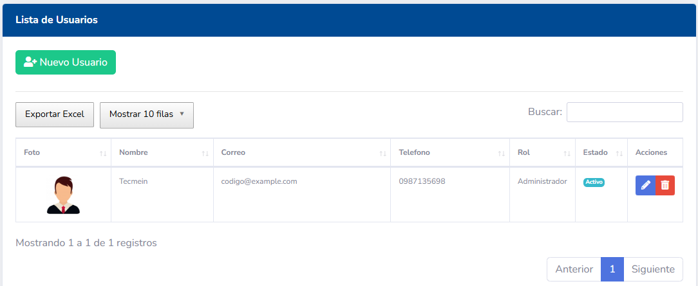
Muestra una lista de todos los usuarios registrados con detalles clave:
- Nombre de Usuario: Identificador de inicio de sesión.
- Nombre Completo: Nombre y apellido del usuario.
- Correo Electrónico: Email de contacto.
- Rol Asignado: El rol que define sus permisos.
- Estado: Indica si la cuenta está Activa o Inactiva.
- Acciones: Botones para Editar, Desactivar, etc.
3.2. Crear un Nuevo Usuario
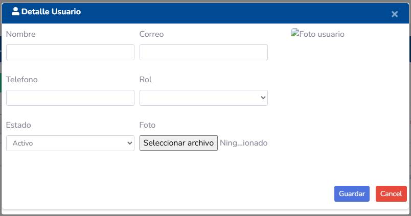
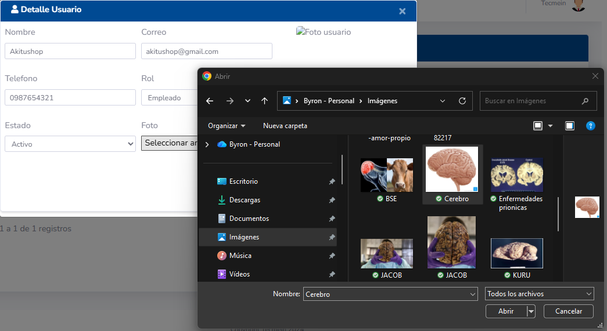


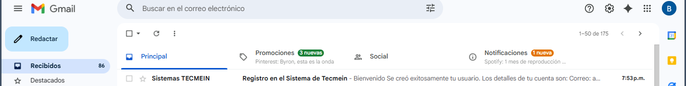
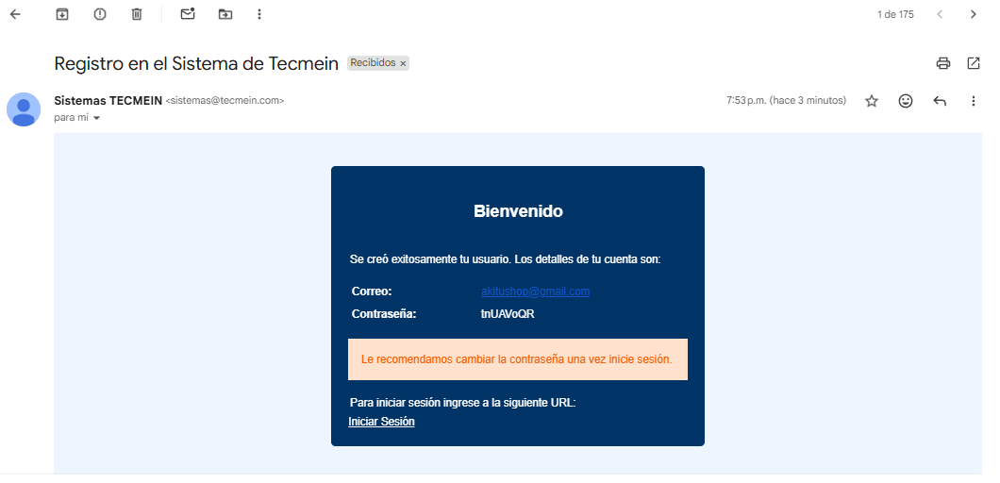
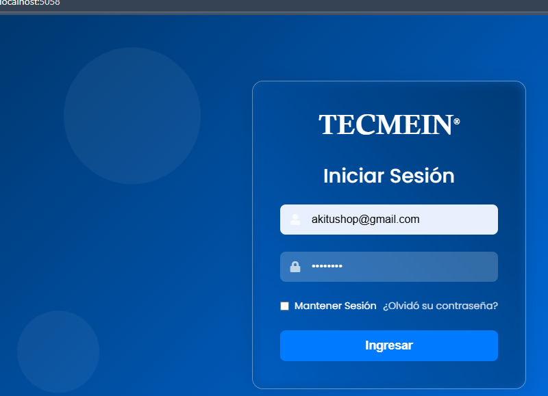
- Haga clic en el botón "Nuevo Usuario".
- Complete el formulario con los datos del nuevo empleado:
- Nombre de Usuario: (Ej:
j.perez) - Nombre Completo: (Ej:
Juan Pérez) - Correo Electrónico:
- Contraseña Temporal: Asigne una contraseña inicial. El sistema debería forzar al usuario a cambiarla en su primer inicio de sesión.
- Rol: Seleccione de la lista el rol que desempeñará (Ej:
Técnico,Vendedor).
- Nombre de Usuario: (Ej:
- Haga clic en "Guardar".
3.3. Editar un Usuario
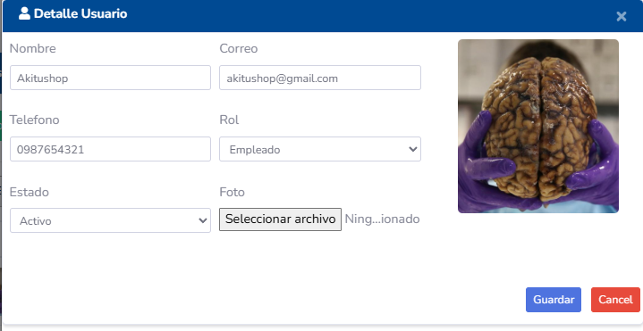
- Busque al usuario en el listado y haga clic en el icono de Editar.
- Podrá modificar su nombre, correo y reasignar su rol.
-
Restablecer Contraseña: Dentro de la edición, suele existir un botón para generar una nueva contraseña temporal y enviarla al correo del usuario si la ha olvidado.


3.4. Activar / Desactivar un Usuario
En lugar de eliminar un usuario (lo que podría causar pérdida de historial), la mejor práctica es desactivarlo. - Un usuario inactivo no puede iniciar sesión en el sistema, pero todos sus registros (visitas, contratos, etc.) se conservan. - Esta acción se realiza normalmente con un botón o interruptor en la fila del usuario en el listado.
3.5. Perfil de Usuario
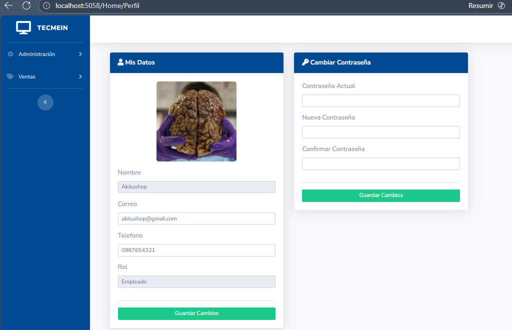
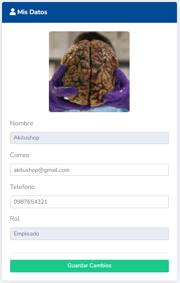


4. Gestión de Roles y Permisos
Esta es la sección más crítica, ya que define lo que cada tipo de usuario puede hacer.
4.1. Pantalla Principal (Listado de Roles)
Muestra los roles definidos en el sistema, como Administrador, Jefe de Ventas, Técnico, Contabilidad.
4.2. Crear un Nuevo Rol
- Haga clic en "Nuevo Rol".
- Asigne un Nombre descriptivo (Ej:
Asistente Comercial) y una Descripción de su propósito. - Guarde el nuevo rol. Inicialmente, no tendrá ningún permiso.
4.3. Asignar Permisos a un Rol
- En el listado de roles, haga clic en el icono de "Permisos" o "Editar" junto al rol que desea configurar.
-
Se presentará una pantalla con una lista de todos los permisos disponibles en el sistema, agrupados por módulo.

-
Ejemplo de Módulo "Visitas":
[ ] Ver Visitas Asignadas[ ] Ver Todas las Visitas[ ] Crear Nueva Visita[ ] Editar Visita[ ] Eliminar Visita[ ] Avanzar Etapa de Visita
-
Marque las casillas correspondientes a las acciones que los usuarios con este rol podrán realizar.
- Haga clic en "Guardar" para aplicar la nueva configuración de permisos. Todos los usuarios con ese rol heredarán instantáneamente estos accesos.
5. Otras Configuraciones
5.1. Numeración de Clientes


5.2. Empresas
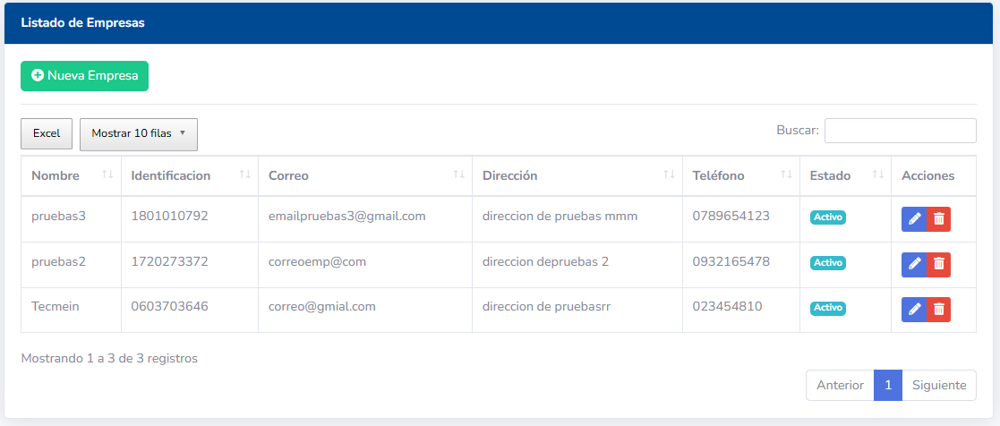
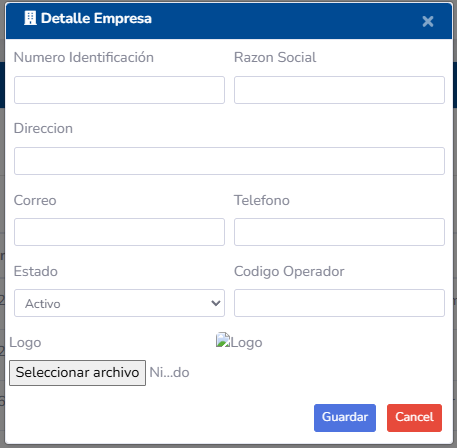
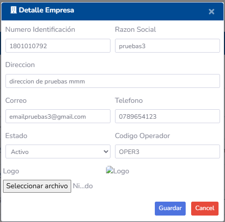
5.3. Impuestos
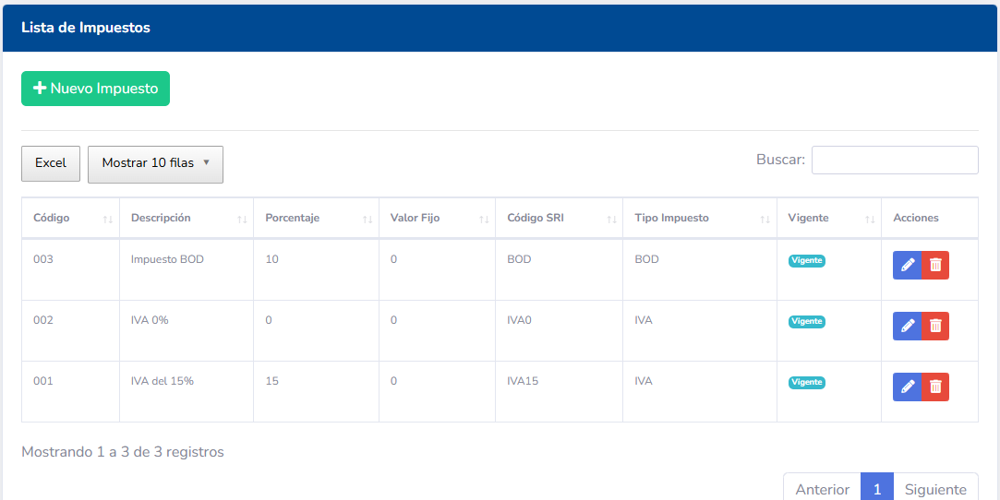
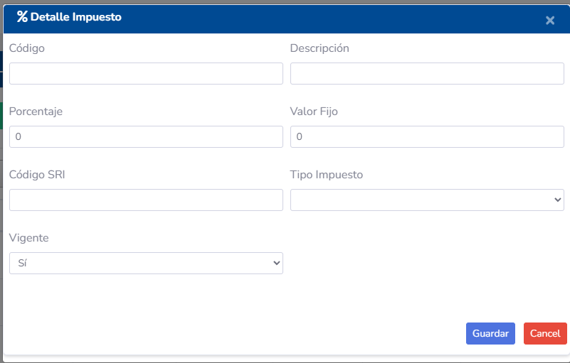
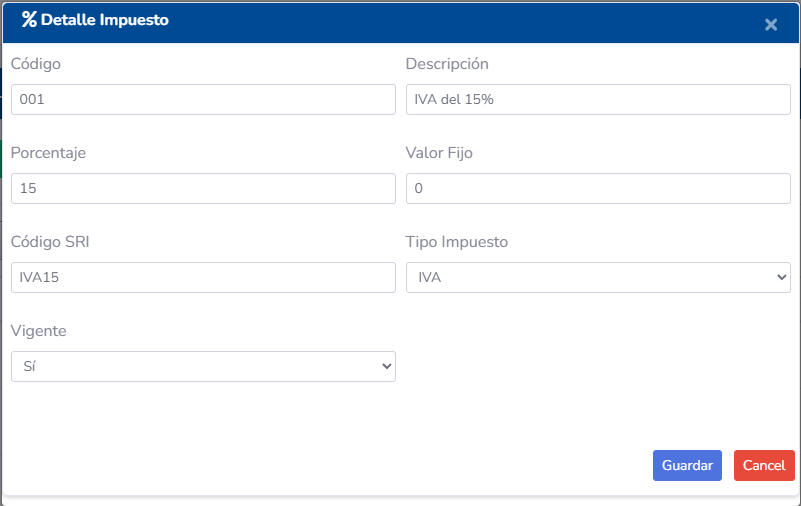
5.4. Formas de Pago
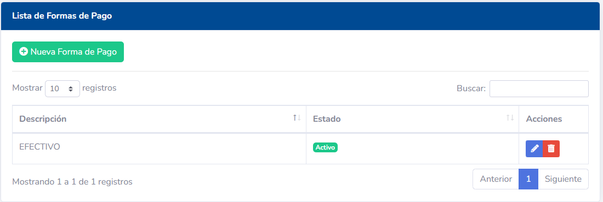
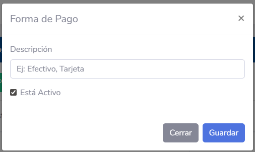
6. Flujo de Trabajo Recomendado
Para una configuración segura y ordenada, siga estos pasos: 1. Definir Roles: Analice los puestos de trabajo en su empresa y cree un rol para cada uno. 2. Configurar Permisos: Asigne los permisos mínimos necesarios para que cada rol pueda cumplir sus funciones (principio de menor privilegio). 3. Crear Usuarios: Cree las cuentas de usuario y asígneles el rol pre-configurado que les corresponde. 4. Revisar Periódicamente: Es una buena práctica revisar los permisos de cada rol de forma periódica para ajustarlos a las necesidades cambiantes del negocio.